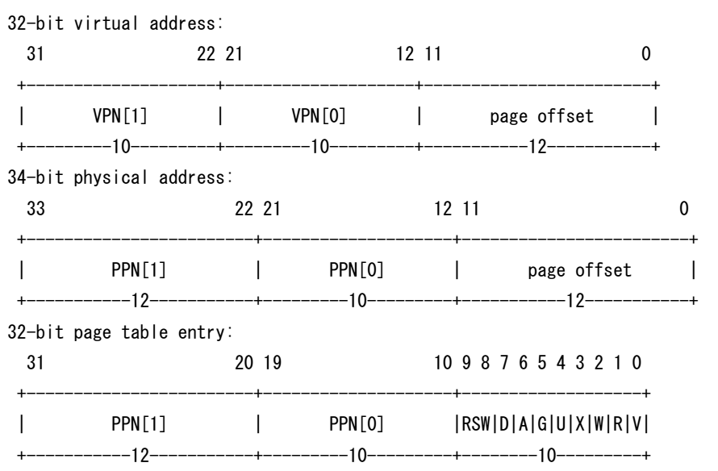

考试题来自2018年春季学期操作系统课期中考试。
对错题
- 进程执行系统调用，从用户态切换到内核态执行时，将切换页表和栈。（×）
从用户态切换到内核态执行时并不切换页表。大概是因为直接使用了映射的内核空间。
- 进程切换的具体执行过程发生在内核态。（√）
显然uCore中确实是这么实现的。而且进程切换需要特权指令（如写CR3寄存器），因此必须在内核态下进行。
- OS不能让运行在OS内核空间的内核线程和用户线程之间进行进程切换。（×）
事实上是可以的。Lab5中，就是在创建了用户进程之后，从内核线程切换到用户进程的。
- OS在建立页表并使能页机制时，需要特权指令才能最终完成。（√）
对于X86和MIPS架构，使能页机制的指令都是特权指令。
- 如果用户态进程一直执行死循环将导致OS内核一直无法控制CPU。（×）
只要硬件提供了硬件中断的支持，OS就可以中断该用户态进程了。
- 二次机会（时钟）页面替换算法有Belady异常现象。（√）
（从未听说过二次机会这个名字。）时钟算法和扩展的时钟算法都有Belady现象。反例来自Piazza。
因如果所有页的访问位都为1时，clock算法将退化为FIFO，可以构造如下序列
1 | a,b,c,d,a,b,e,a,b,c,d,e |
当物理页帧为3时，缺页次数为9次，当物理页帧为4时，缺页次数为10次。
- OS内核会直接杀死产生内存访问异常的用户进程。（×）
显然，内存访问异常有多种情况，权限错误，地址不合法，或者是缺页。访问越界这种情况确实会导致OS杀死进程（SEGMENTATION FAULT==），但缺页异常下肯定不是杀死这个进程，而是将缺的页换入，重新执行产生缺页异常的指令。
- 由于栈的原因，在OS内核中不能执行系统调用（syscall）来获得OS内核的服务。（×）
系统调用可以在同特权级下进行，此时不进行栈的切换。
- 对于子进程而言，
fork()执行不成功后的返回值<0。（√）
我觉得这道题的脑回路很奇异。按照一般的想法，父进程执行fork()之后，如果成功，则创建子进程，父进程处fork()的返回值为子进程的PID，子进程处fork()的返回值为0。如果父进程执行fork()不成功，则返回负值，此时也就没有子进程了。所以这道题不知如何选。
而老师解释说，这道题目说的是“fork出来的子进程再次进行fork的情况”。这就只不过是普通的fork()而已了。
- 如果不考虑执行性能，ucore on x86-32可实现LRU页替换算法。（√）
因为有人真的实现了，所以是对的。大致的思路是，强制每次页访问都触发一个页访问异常，利用这个页访问就可以知道究竟发生了什么样的访存操作，以及这些操作的先后次序。这样的方案能够得到准确的LRU信息。
填空题
小强同学认真上课听讲，参与讨论，并完成了从lab0~lab3的所有实验，在学习过程中，了解和学到了很多知识。下面是他的学习心得，请补充完整。
1
小强发现完成实验需要在Linux下操作很多命令行工具，于是他认真学习了lab0中的知识，了解到Linux中在命令行模式下可以通过执行命令（1.1）来显示当前目录的路径，如果我们编写的程序有语法错误，编译器（1.2）会报错，根据错误信息，我们可以修改我们的程序，可以通过硬件模拟器工具（1.3）来执行我们的ucore操作系统。
- pwd
- gcc
- qemu (system i386)
这些都很简单，做了实验的人应该都会（虽然pwd其实很少用，因为prompt前面一般都会显示路径……）
2
在完成lab 1的过程中，通过分析硬件模拟器工具对CPU状态的输出信息，可了解到基于80386的计算机在加电后执行BIOS代码时处于（2.1）模式。而os lab 1中的bootloader通过建立（2.2）表可让计算机进入（2.3）模式，从而可以充分利用80386 CPU提供的保护能力和32位内存寻址空间。os lab 1中的ucore os为了能够对异常／中断等进行有效管理，需要建立（2.4）表，才能使能中断，让ucore os进行进一步的中断处理。在学习80386特权级时，对CPL、RPL和DPL需要满足如下两个公式确保系统安全：访问（2.5）时，CPL<=DPL[门] & CPL>=DPL[段]；访问（2.6）时，MAX(CPL, RPL)<=DPL。
- 8086模式/实模式
- 段表/GDT表/全局描述符表
- 保护模式
- 中断描述符表/IDT表
- 中断门
- 段
3
1.3在完成lab2的过程中，需要了解x86-32的内存大小与布局，页机制，页表结构等。硬件模拟器提供了128MB的内存，并设定页目录表的起始地址存放（3.1）寄存器中，页目录表和页表的地址按（3.2）字节对齐。在一个页目录表占用（3.3）个Byte，一个页表占用（3.4）个Byte。ucore
通过x86-32 CPU中的（3.5）寄存器可以获得发生页面访问错误时的线性地址。
- CR3
- 4K
- 4K
- 4K
- CR2
4
在完成lab3的过程中，ucore操作系统在页机制基础上，并利用异常机制建立了虚存管理策略与机制。如果一个页（4KB/页）被置换到了硬盘某8个连续扇区（0.5KB/扇区），该页对应的页表项（PTE）的最低位——present（存在位）应该为（4.1），表示虚实地址映射关系不存在，而原来用来表示页帧号的高（4.2）位，恰好可以用来表示此页在硬盘上的起始扇区的位置（其从第几个扇区开始）。
- 0
- 20
5
在学习进程的概念中，了解到在支持多进程的操作系统（包括ucore)中，每个进程有两个堆栈，分别是（5.1）栈和（5.2）栈。操作系统通过建立（5.3）这个核心数据结构来支持对进程的管理。对于进程的三状态模型，是指进程在执行过程中会具有（5.4），（5.5），（5.6）三种状
态。在操作系统具有进程地址空间为单位的swap in/out虚存管理机制，可建立进程的五状态模型，将增加（5.7），（5.8）。
- 内核
- 用户
- PCB/进程控制块
- 就绪态
- 运行态
- 等待态
- 就绪挂起态
- 就绪等待态
问答题
fork
在Linux环境下，下列程序调用magic函数的次数是多少？如果一个程序死循环调用fork()系统调用，会出现什么情况？请说明原因。
1 |
|

如上图，最终会得到个进程，即进行fork()系统调用1024次。
一个程序死循环调用fork()系统调用，则被称为“fork()炸弹”，因为进程会以指数级别增加。在实际的机器上尝试fork()炸弹的后果是：机器不会死机，但是无法创建新的程序了，因为进程控制块资源耗尽了。这不会导致失去对电脑控制权，仍然可以通过Ctrl+C终止程序。
用户线程
用户线程是指由一组用户线程管理库函数来完成线程的管理功能，包括线程的创建、终止、同步和调度等。假设处于仅通过用户线程管理库管理用户线程的操作系统环境，请回答下列问题：
- 操作系统内核是否需要知道用户线程的存在？请说明理由。
- 用户线程管理库实现的线程切换是否需要进入内核态，通过操作系统内核来完成？请说明理由。
- 用户态线程管理库是否可以随时打断用户态线程，完成线程调度与切换？请阐述理由或方法。
- OS内核不需要知道用户库维护的线程的存在，如果它知道，也就没有用户线程的意义了，变成了内核线程。
- 线程切换不需要进入内核态，因为线程的页表是共享的，其他现场信息不需要特权指令来保存，所以可以在用户态切换。
- 能，因为OS可以通知线程管理库发生中断（发出软件中断）。也可以回答不能，因为在用户态不能实现中断。重点是自圆其说。
页表访问时间
在一个只有一级页表的请求页式存储管理系统中，假定页表内容如下表：
| 页号 | 页框（Page Frame）号 | 有效位（存在位） |
|---|---|---|
| 0 | 123H | 1 |
| 1 | N/A | 0 |
| 2 | 254H | 1 |
页面大小为4KB，一次内存的访问时间是100ns，一次快表（TLB）的访问时间是10ns，处理一次缺页的平均时间为1e7ns（己经包含更新TLB和页表的时间），进程的驻留集大小固定为2，采用最近最少使用置换算法(LRU)和局部淘汰策略。假设：
- TLB初始为空；
- 地址转换时先访问TLB，若TLB没有命中，再访问页表（忽略访问页表之后的TLB更新时间）；
- 有效位为0表示页面不在内存，产生缺页中断，缺页中断处理后，返回到产生缺页中断的指令处重新执行。
设有虚地址访问序列2362H，1565H，25A5H，请问：
- 依次访问上述三个虚地址，各需要多少时间？给出计算过程？
- 基于上述访问序列，虚地址1565H的物理地址是多少？请说明理由。
首先访问2362H，页号为2H，偏移量为362H。查找TLB未命中（10ns），查找页表得到页框号为254H（100ns），更新TLB（略），计算出物理地址为254362H，访存（100ns），总时间为210ns。
然后访问1565H，页号为1H，偏移量为565H。查找TLB未命中（10ns），查找页表发现缺页（100ns），根据LRU算法，将第0页换出，将第1页换入到页号为123H的物理页帧，更新TLB和页表（1e7ns），访存（100ns），总时间约为1e7ns。
最后访问25A5H，页号为2H，偏移量为5A5H。查找TLB命中（10ns），计算出物理地址为2545A5H，访存（100ns），总时间为110ns。
由于第1页现在位于页号为123H的物理页帧中，因此虚地址1565H的物理地址是123565H。
RISC-V页表
2017年图灵奖得主John L. Hennessy和David A. Patterson提出了RISC-V架构的32位小端序CPU设计，它有34位地址总线，使用32位页式存储管理。该计算机的页面大小为4KiB，一个页表大小为4KiB，其中每一个页表项(Page Table Entry，PTE)大小为4B，虚拟地址、物理地址和PTE的结构如下图所示。

如上图所示，一个虚拟地址由虚拟页号(Virtual Page Number，VPN)和页内偏移组成，物理地址由物理页号(Physical Page Number，PPN)和页内偏移组成，PTE由PPN和一些控制位组成，其中R/W/X三个域分别表示对应页的读/写/执行权限，它们的不同组合可以表示不同的属性，如下表所示：
| X | W | R | Meaning |
|---|---|---|---|
| 0 | 0 | 0 | This PTE points to next level of page table. |
| 0 | 0 | 1 | Read-only page. |
| 0 | 1 | 0 | Reserved for future use. |
| 0 | 1 | 1 | Read-write page. |
| 1 | 0 | 0 | Execute-only page. |
| 1 | 0 | 1 | Read-execute page. |
| 1 | 1 | 0 | Reserved for future use. |
| 1 | 1 | 1 | Read-write-execute page. |
请回答下列问题：
- 32-bit的RISC-V架构CPU使用34位物理地址而不是32位物理地址，这样做的好处是什么？
- 设页目录基址为0x90000000，部分物理内存的内容如下图所示，试给出虚拟地址0x3A69A4D2和0x3A8EB00C所对应的物理地址和它们所在页的类型。请写出计算过程。
第一题的答案是显然的：34位物理地址可以寻址16G的内存，这显然是好的。
第二题就比较复杂了。首先计算出两个虚拟地址对应的各项。由于单个页表项的大小是4B，可以通过VPN[1]计算出页表项所在的地址为0x90000000+4*VPN[1]，并读出页表项（注意是小端存储）。
| 虚拟地址 | VPN[1] | VPN[0] | offset | PTE地址 | PTE |
|---|---|---|---|---|---|
| 0x3A69A4D2 | 0xE9 | 0x29A | 0x4D2 | 0x900003A4 | 0x28000001 |
| 0x3A8EB00C | 0xEA | 0xEB | 0x00C | 0x900003A8 | 0x3EB0000F |
可以发现，0x28000001的XWR=000，因此它是一个一级页表项，指向的是一个二级页表，它的基地址是0xA0000000。二级页表项的地址=0xA0000000+4*VPN[0]=0xA0000A68，读出二级页表项为0x37AB6C09，它指向一个可执行的页，页的基地址为0xDEADB000。物理地址=页基地址+偏移量=0xDEADB000+0x4D2=0xDEADB4D2。
而0x3EB0000F的XWR=111，也就是说，它指向一个可写可读可执行的页。不妨进行大胆的猜测：这个页的大小是4MB，虚拟地址中的VPN[0]和offset共同作为页内的偏移量；而页表项中的PPN[1]就是页基址的高12位。由此可得，页基址=0xFAC00000，物理地址=页基址+偏移量=0xFAC00000+0xEB00C=0xFACEB00C。
关于RISC-V内存管理的更多内容可以参见wiki或RISC-V的文档，不过我一时是懒得去读了。
总结
我觉得今年的题目比去年的难度更大，特别是最后一题，如果没有仔细阅读过硬件内存管理部分，很难想象到一级页表项管理的页是特殊的，大小为4MB。其余的部分都比较基础了。